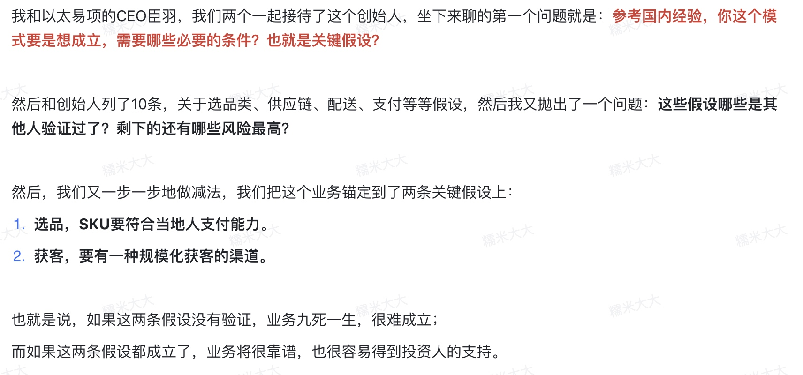
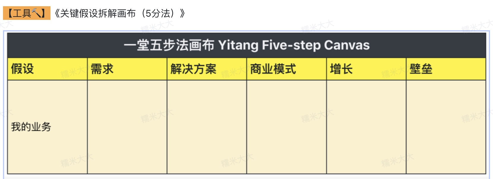
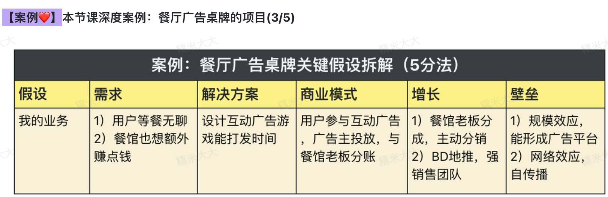
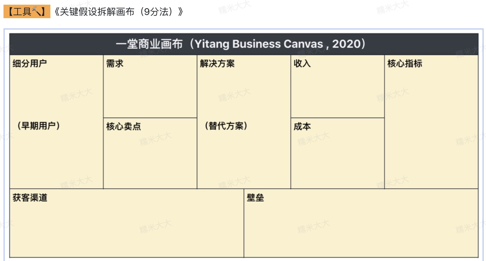
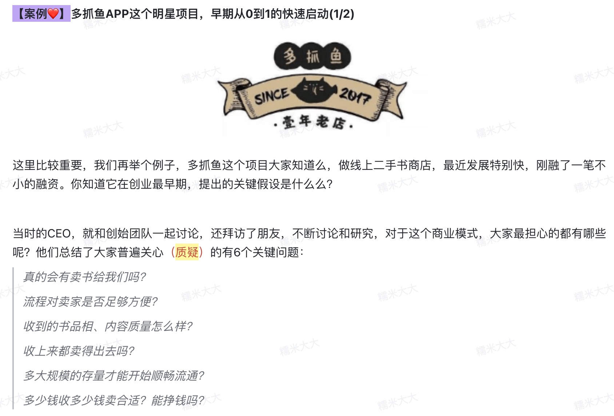

课程重点讨论4个话题
- 理解本质: 我们创业，究竟在创什么？
- 创业拆解: 如何拆解项目背后的逻辑？
- 提炼重点: 如何抓住商业模式的关键？
- 高效创业: 如何低成本地验证你的业务？
课程最早出发点
很多早期创业者，做了好几年，却一直抓不住重点，把很多精力和钱，放在了根本不重要的的事情上。
主要原因: 九成创业者没有理解清楚创业背后的底层逻辑，而且不同CEO之间的认知差距很大。很多团队遇到的选方向/业务/增长/融资的问题，都是缺少对业务底层逻辑的理解。
预热思考题
- 如何把一个新项目的进展，拆解成一个个前后依赖的、核心的节点和里程碑？这个里程碑用来指导你决策、向上汇报和对外讲故事。
- 给你一张白纸，站在宏观&上帝视角，写下你项目的关键点，目的是让对方尽快了解你的项目，抓住你项目的关键点，并辅助你未来做几十上百万级别的业务决策，你会怎么写呢？
理解: 创业究竟在创什么？
我们出来创业，究竟在创什么？创业风险这么高，难度这么大，还要花几年时间去试错，创业背后的逻辑究竟是在创什么？
很多人读过很多创业必读指南：《精益创业》、《从0到1》、《商业模式新生代》、《四步创业法》，但是都没有读懂，不知道怎么用，是因为对于“创业底层逻辑”缺少完整的思考。
创业两种类型
- X型创业：创业 -> 组建开发、运营团队 -> 集资 -> 开公司 -> 开发运营 -> 用户市场反馈
- Y型创业：用关键假设驱动业务。
假设: 你的模式如果想要成立，它所依赖的所有关键条件。(这些假设如果全部验证成立，你的业务基本跑通了。如果有一条不成立，那你的业务也很难走下去，你需要想办法转型，甚至放弃)
关键假设: 所有假设中，风险最高，对你创业最重要的假设。
假设驱动的思维方式： 你要努力识别出这些、极少数的【关键假设】，然后围绕这些【关键假设】来验证你的业务。
IDEA往往不值钱，背后的关键假设才价值千金
核心原则：拆 >>> 不拆

如何掌握“关键假设”方法
关键假设三板斧: 先加法，再减法，最后快速验证，每个环节3个套路
- 先加法: 把业务拆成一组假设，用几句话、或者一页纸，把整个业务所有要素提炼出来
- 再减法: 从先前的一组假设中挑出重点，把注意力放在关键假设上
- 快验证: 面对挑出来的关键假设，应该晓得如何快速验证，如何用10%的投入，完成100%的工作
实操：关键假设三板斧
第一板斧：把你的业务拆成假设(加法)
核心建议：拆解能力很重要，创业者要学会跟自己提问题
要有能力，把一个项目拆成一系列独立判断，而且它们是极度关键的、影响成败的、逻辑完备的、前后依赖的，可以用来决策的。
从简单到复杂的拆解口诀: 259
第一种拆法 2部分
任何一个业务，都可以拆解成两个最基础的假设：价值假设和增长假设
第一个假设：价值假设 提供的东西，到底对于消费者有没有价值，大家会不会为此而买单？或者你的一个门店，长期能不能盈利？这些都是价值假设
第二个假设：增长假设 这个业务如果有价值的话，能不能快速复制、快速扩张、快速的传播开，让大家都用起来
增长的前提是你的产品得有真正的价值，不然过早复制，你的扩张越多，你的亏损也就越多，反而创业失败也就越快
不要过早复制，未经验证的商业模式
例子:
第二种拆法 5部分
创业的核心里程碑，其实是“最关键的假设“得到验证
创业总结为最重要的五个里程碑：需求-解决方案-商业模式-增长-壁垒
而且这些环节，环环相扣，是一个逐步推进，依次推导出来的过程。认真研究这个链条，做反思：每一步都是后一步的前置条件，比如如果你的用户需求不存在，那么后面所有的解决方案、商业模式，增长策略，也就都不成立了。
- 全局预判: 创业开始，在脑子里一定有全局思考，要对未来有所预判。
- 重点执行: 打仗时候，把手里重点放在眼下真正重要的环节，专注执行。

例子:

第三种拆法 9部分
任何一个商业模式，都可以拆成9个关键部分，分别是：细分用户、需求、核心卖点、解决方案、收入、成本、核心指标、获客渠道以及壁垒。

例子:
理解内在联系
可以具体分析有哪些联系
第二板斧：提炼其中的关键假设(减法)
原则一：前置假设优先
假设是有前后依赖关系的，如果没验证需求存在，就不要过早关心商业模式和增长问题，按照从需求到方案的顺序验证，比较稳妥。
按序做，回退一步；乱序做，全部推翻
每次创业都习惯思考增长问题，不断琢磨后面的获客渠道，但是忽略了它的前置假设。在创业过程中，每每发现用户画像不准，解决方案调整，都会推翻这个渠道计划，几乎全部都要重头再来。这样创业，往往会花费很多不必要的创业成本。
原则二：验证单一假设
如果你的方案比较重，建议多拆分一些版本，每次尽量只验证一件事情，这样执行起来会非常快，而且就算回退，也是很小范围的试错。
风险越小，步子越小
如果你的开发周期很长，而且创业团队花几个月的时间都在等待开发测试、在不断添加功能和打磨细节，可以反思一下，关键假设是不是可以尽早验证。
原则三：风险高的优先
如果你的方案里，有某一两项风险特别高，那你应该先验证这一两项。很多创业者都喜欢挑简单的验证，因为简单没什么风险，甚至会刻意回避高风险的部分。
不要回避高风险问题，大家都担心的，就是眼下最重要的关键假设。
所谓关键假设，就是必须要一组全部成立，你的模式才成立。风险越高代表失败率越高，所以是一定逃不掉的，尽早验证，尽早解决，拖得越晚，损失越大。
关键假设就是你的项目有很多风险，这些点同时成立了，你的模式才成立。这些关键的风险点，就是你目前的关键假设。
创业过程中，风险越高的假设，往往最致命，越应该尽早把这些问题挑出来，然后努力用最低成本去验证，确保不会一错到底。
这节课建议熟悉加法、减法这两个套路，然后慢慢熟练了，无招胜有招，尝试去抛开这个套路，直接抓住本质，用尽各种方法，来抓出模式中风险最高的部分
快速获取关键假设的渠道
- 你对业务的判断(这是基础)
- 合伙团队一起讨论(大家虚的点是哪里)
- 圈内创业者建议(尤其是坑和吐槽)
- 投资人的建议(经验/吐槽)
- 资深FA的建议(经验/吐槽)
- 历史阵亡项目的死因(值得重点研究)
- 同一赛道竞品的侧重点(对标业务在验证什么)
如果刚进入一个赛道，经验不多，可以用这7个策略，来找出你模式风险高的关键假设

作为创业人，一定培养开放心态，多接受各方面信息非常重要，甚至是主动找行业专家来吐槽你的项目，而且脑子一定要非常清楚，要知道哪些关键假设已经可以回答，哪些还不能。直面关键假设，一定不要骗自己。
第三板斧：高效回答关键假设(回答)
创业 ≠ 做一个产品出来， 创业 = 验证关键假设
第一种回答：靠常识，用行业经验回答
不要创业烧了一堆钱，就拿到几条行业必知必会
创了半天业，最后发现书里都有
创业里Benchmark(基准值、经验值)极其重要
要培养Benchmark的意识，这是提升创业效率重要的一步。
所以说回答假设里面最简单的方法，就是直接去找行业的专家，去找圈内认知最好的人去聊，直接拿一些圈内人的判断，可以帮你大幅减少创业验证的难度。
第二种回答：靠调研，通过对手回答
有些你想要的答案，可能并没有形成行业共识，但是却藏在某些竞争对手的业务数据里，如果你有能力拿到它，你就能省大把时间。
你烧钱拿到的业务认知往往就在别人的公司里
在竞争情报环节，创业者常常有三大误区：以为原创、盲目自信、闭门造车
没有调查，就没有发言权。
没有调研，就没有决策权。
尤其是如果已经有很多很多同类项目死过一波了，你花时间去研究竞争对手死亡原因，比你辛苦开发一个APP再去重复验证，效率明显高太多了。
而这些年，我和身边的创业者，越是经验多，越是老道，越是习惯用调研的方式解决问题。
第三种回答：靠实验，设计实验测试
最后，还有一些假设风险很大，通过常识和竞争对手无法回答，这就需要自己安排实验了，通过设计各种实验验证你的模式。
强调一点: 好的验证，都是小步快跑，低成本试错。尽量避免在一开始，就做一个大而全的产品，打算一次性就把所有资源都赌上，把所有验证工作一次性全做了。
回顾